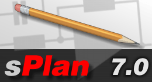

Система подсказок v.0.1.
Содержание
- sPlan
Общее
Добавление рамки:
Меню/Форма/Открыть форму...
выбрать нужный файл с расширением .sbk
Пути к библиотекам и прочие настройки:
Меню/Опции/Основные параметры...
Содержание
- sPlan